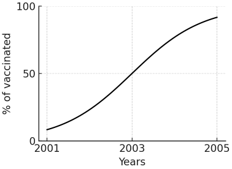

Q1: The incidence of diabetes mellitus in a population with very little migration has remained stable over the past 40 years (55 cases per 1000 people per year). At the same time, prevalence of the disease increased threefold over the same period. Which of the following is the best explanation for the changes in diabetes occurrence measures in the population?
Q2: In a survey of 10,000 IV drug abusers in town A, 1,000 turn out to be infected with hepatitis C and 500 infected with hepatitis B. During two years of follow-up, 200 patients with hepatitis C infection and 100 patients with hepatitis B infection die. Also during follow-up, 200 IV drug abusers acquire hepatitis C and 50 acquire hepatitis B. Which of the following is the best estimate of the annual incidence of hepatitis C infection in IV drug abusers in town A?
Q3: The following graph represents the vaccination rate dynamics for hepatitis B in IV drug abusers in town A. Which of the following hepatitis D statistics is most likely to be affected by the reported data?

Q4: In a city having a population of 1,000,000 there are 300,000 women of childbearing age. The following statistics are reported for the city in the year 2000: Fetal deaths: 200 Live births: 5,000 Maternal deaths: 70 Which of the following is the best estimate of the maternal mortality rate in the city in the year 2000?
Q5: A study is conducted to assess the relationship between plasma homocysteine level and folic acid intake. The investigators demonstrate that the plasma homocysteine level is inversely related to folic acid intake, and the correlation coefficient is -0.8 (p < 0.01). According to the information provided, how much of the variability in plasma homocysteine levels is explained by folic acid intake?
Q6: In a small observational study, 100 industrial workers are followed for one year to assess for the development of respiratory symptoms (defined as productive cough lasting at least one week). 30 of 60 smokers experience respiratory symptoms over the year versus 10 of 40 non-smokers. What percentage of respiratory disease experienced by all study subjects is attributed to smoking?
Q7: Four separate studies are undertaken to assess the risk of acute coronary syndrome in post-menopausal women taking hormone replacement therapy. The results of the individual studies as well as the result of a meta-analysis are shown on the table below. Each study result is presented as an odds ratio along with a confidence interval. Which of the following results most likely corresponds to the meta-analysis?
Q8: A new test has been developed for early diagnosis of pancreatic cancer. It uses a serum marker level as an indicator of the neoplastic process. The graph below demonstrates the distribution of serum marker levels in both healthy and diseased populations